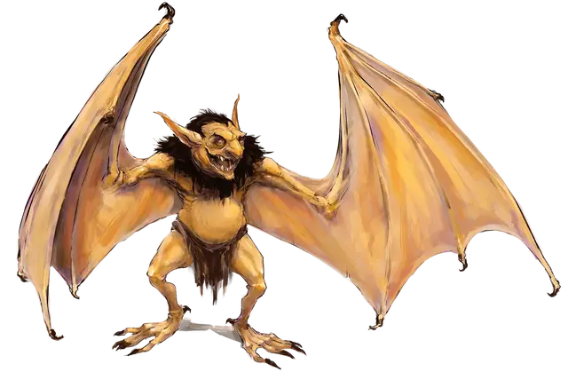

Летучая вермышь
Werebat
Маленький Гуманоид (Гоблин, Перевёртыш), нейтрально-злой

Класс Доспеха 13
Хиты 24 (7к6)
Скорость 30 футов, летая 30 футов (в гибридной форме летучей мыши), лазая 30 футов (в гибридной форме летучей мыши)
| мод | спас | ||
|---|---|---|---|
| СИЛ | 8 | −1 | −1 |
| ЛОВ | 17 | +3 | +3 |
| ТЕЛ | 10 | +0 | +0 |
| мод | спас | ||
|---|---|---|---|
| ИНТ | 10 | +0 | +0 |
| МДР | 12 | +1 | +1 |
| ХАР | 8 | −1 | −1 |
Навыки Восприятие +3, Скрытность +5
Иммунитет к урону дробящий, колющий, рубящий от немагических атак, кроме нанесённых посеребрённым оружием
Чувства тёмное зрение 60 футов, пассивное Восприятие 13
Языки Гоблинский, но не говорит в форме летучей мыши
Опасность 2 (450 опыта)
Бонус мастерства +2
Особенности
Меняющий форму. . Летучая вермышь может действием превратиться в гибрид летучей мыши и гуманоида Среднего размера или гигантскую летучую мышь Большого размера или же принять свой истинный облик Гуманоида. Все её статистики кроме размера остаются одинаковыми во всех обликах. Всё носимое и несомое ей снаряжение не превращается. Она принимает свой истинный облик, если умирает.
Эхолокация (только в облике Летучей мыши или Гибрида). . Летучая вермышь имеет слепое зрение на расстоянии до 60 футов, пока не оглохнет.
Острый слух. . Летучая вермышь совершает с преимуществом проверки Мудрости (Восприятия), полагающиеся на слух.
Ловкий побег (Только в облике Гуманоида). Летучая вермышь может выполнить действия Засада и Отход бонусным действием на каждом своём ходу.
Чувствительность к солнечному свету. . Находясь на солнечном свете, летучая вермышь совершает с помехой броски атаки и проверки Мудрости (Восприятие), полагающиеся на зрение.
Действия
Мультиатака (только в Гибридной и Гуманоидной форме). В облике гуманоида летучая вермышь совершает две атаки Скимитаром или две атаки Коротким луком. В гибридной форме она может сделать одну атаку Укусом и одну атаку Скимитаром.
Укус (только в облике Летучей мыши или Гибрида). . Рукопашная атака оружием: +5 к попаданию, досягаемость 5 фт., одно существо. Попадание: 6 (1к6 + 3) колющего урона, и летучая мышь получает временные хиты, равные нанесенному урону. Если цель — Гуманоид, она должна преуспеть в спасброске Телосложения Сл 10, или будет проклята ликантропией летучей вермыши.
Скимитар (только в Гибридной и Гуманоидной форме). . Рукопашная атака оружием: +5 к попаданию, досягаемость 5 фт., одна цель. Попадание: 6 (1к6 + 3) рубящего урона.
Короткий лук (только в Гибридной и Гуманоидной форме). . Дальнобойная атака оружием: +5 к попаданию, дистанция 80/320 фт., одна цель. Попадание: 6 (1к6 + 3) колющего урона.
Описание
Летучая вермышь это гуманоид, страдающий редкой формой ликантропии, позволяющий ему превращаться в гигантскую летучую мышь или гибрид летучей мыши с гуманоидом. (См ликантропия, для получения дополнительной информации.) Большинство летучих вермышей были когда-то гоблинами.
Обитатели глубин. Летучие вермыши избегает даже гоблинское общество из-за потребности питаться кровью для своего выживания. Они предпочитают устраивать логова в темных местах, таких как пещеры и потолочные балки, и, как правило, они ночные охотники.
Кровопийцы. Летучая вермышь должна потреблять каждую ночь по крайней мере 1 пинту свежей крови или она ослабнет и получит один уровень истощения, который не снимается никаким количеством отдыха. Каждая пинта крови, выпитая летучей вермышью, снимает полученный таким образом один уровень истощения.
Ликантропия летучей вермыши. Персонаж игрока, ставший летучей вермышью, получит значение Ловкости 17, в том случае если его показатель ниже данного значения. Броски на атаку и урон для атаки укусом летучей вермыши основаны на Силе или Ловкости персонажа, в зависимости от того, какой показатель выше.